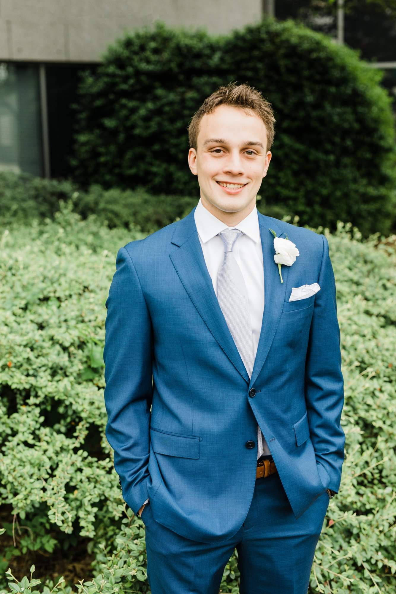

About Me

Uh welp...my name is Ben Clark. I'm a 25 year old Atlanta transplant beginning his journey into the world of development.
I hail from Charlotte, North Carolina. After high school, I went to the great state of Alabama to study Industrial Engineering
at Auburn University (War Eagle).
Post graduation, I accepted an offer from Equifax as an IT Solutions Consultant and, thus, entered the world of Development. It was during this role that i gained the exposure to the different roles that make up a development team. It was after a few years of writing user stories and scrumming it up that I decided that I wanted to make the jump from Producy Owner to Developer
When I'm not prioritizing the backlog, I can mostly be found at the nearest rooftop bar. I enjoy sporting and music events on most weekends and any of the typical millenial dog friendly venues.
Post graduation, I accepted an offer from Equifax as an IT Solutions Consultant and, thus, entered the world of Development. It was during this role that i gained the exposure to the different roles that make up a development team. It was after a few years of writing user stories and scrumming it up that I decided that I wanted to make the jump from Producy Owner to Developer
When I'm not prioritizing the backlog, I can mostly be found at the nearest rooftop bar. I enjoy sporting and music events on most weekends and any of the typical millenial dog friendly venues.